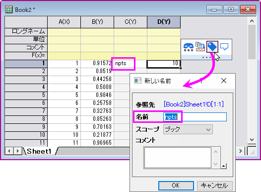
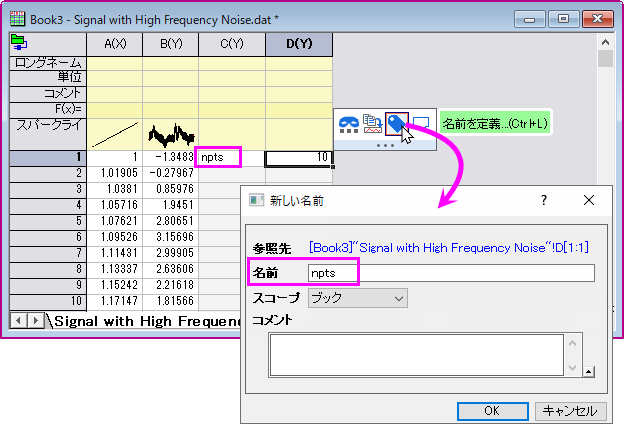

名前付き範囲
Named-Range
Origin 2022より、ワークシートの単一のセルまたは列（の一部）に直接名前を付けることで範囲変数を定義できます。名前付き範囲は、X-ファンクションでのセル/列の参照、列値の設定の数式、分析テンプレート、LabTalkスクリプトなどに使用できます。
Origin 2022b から、線形フィット、非線形フィット (NFit)、多項式フィット、および多重線形回帰ダイアログボックスで、名前付き範囲の値を X の「開始」値と「終了」値、初期パラメータ値、下限と上限、および固定パラメータ値として使用します。
範囲を定義する
Originでは、いくつかの場所から、名前付き範囲を定義することができます。
名前を定義メニューから
- ワークシートの単一のセルもしくは列を選択します。
- メニューのデータ：名前を定義を選択します（もしくはCtrl+L）。
新しい名前ダイアログが開きます。
| 名前
|
範囲変数として名前を入力します。「AAA1」のように、SCN表記において競合が生じる名前は使用を避けてください。命名規則：
- 文字で開始します。
- 最低でも4文字。
- スペースや特殊文字は使用できません。
- 大文字と小文字は区別しません。
|
| スコープ
|
名前付き範囲には、ワークシート、ワークブック、プロジェクトの3つのスコープレベルを指定できます。
- ワークシート/ワークブック/プロジェクト スコープの範囲は、それぞれワークシート/ワークブック/プロジェクトとともに保存されます。
- 同じスコープレベルでは、名前は一意である必要があります。
- 名前付き範囲がシート/ブック スコープとして定義されている場合、この範囲をX-ファンクションまたはLabTalkスクリプトの入力として使用するときは、シート/ブックがアクティブである必要があります。
|
| 関数として定義する
|
Y列が選択されている場合、このチェックボックスにチェックを入れると、この列とそれに対応するX列が関数として使用されます。つまり、命名されたXY範囲を使用して、XからYを補間/補外することができます。
- 補間するXは、単一の値またはデータセットにすることができます。
- Xは単調でなければなりません。
- デフォルトの補間方法は線形です。オプションで、この関数の2番目の引数として、スプライン/Bスプライン メソッドを指定できます。
詳細は、LabTalkガイドの補間の案内を参照してください。

|
例えば、範囲「alpha」をcol(B)として定義したとします。
スクリプトウィンドウで次のスクリプトを実行して、x = 0.15で補間されたY値を取得します。
alpha(0.15,spline)=;
そして、2つのXY列を追加し、col(C)にX値を入力する場合、補間/補外し、範囲「beta」として定義します。
col(D)のF(x)=に、式を入力します。
alpha(beta);
col(C)から補間/補外されたY値で埋まります。
|
|
名前付き範囲での競合の防止：
- シートを複製する場合：シートレベルの名前付き範囲が複製されます。ブックおよびプロジェクトレベルの名前付き範囲は複製されません。
- ブックを複製する場合：ブックおよびシートレベルの名前付き範囲が複製されます。プロジェクトレベルの名前付き範囲は複製されません。
- ブック間でシートをドラッグする場合：ブックレベルの名前付き範囲が重複している場合は、宛先のブックの名前付き範囲のみを保持します。
- プロジェクトを追加する場合：プロジェクトレベルの名前付き範囲が重複している場合は、追加するプロジェクトの名前付き範囲のみを保持し、追加されるプロジェクトの名前付き範囲を破棄します。
|
数式バーから
- ワークシートの単一のセルもしくは列を選択します。
- 表示：数式バーメニューを選択し、数式バーを表示させます。
- 左端の編集ボックスに、範囲名を入力して範囲を定義します。
Note:
- この方法で追加された名前付き範囲のスコープは、デフォルトではブックです。
- ドロップダウンリストから既存の名前付き範囲を選択すると、その範囲にジャンプします。
ミニツールバーから
- ワークシートの 単一の入力された セルを選択します。
- 表示されるミニツールバーの名前を定義ボタン
 を選択します。新しい名前ダイアログが開きます。
を選択します。新しい名前ダイアログが開きます。
 | 選択したセルの左側に命名規則を満たすテキストがある場合、そのテキストは範囲の名前として自動選択されます。
- 
|
名前の管理メニューから
- データ：名前の管理メニューを選択します（もしくはCtrl+F3）
- 開いた名前の管理ダイアログで、名前付き範囲を追加、編集、削除することができます。詳細については、次のセクションをご覧下さい。
名前付き範囲の管理
名前付き範囲マネージャ
- データ：名前の管理メニューを選択します（もしくはCtrl+F3）
- 名前付き範囲の管理にて、以下を行えます
- 名前、スコープを変更し、既存の範囲のコメントを編集します。
- 右クリックして新しい範囲を挿入します。
- 右クリックして、既存の範囲を削除します。
- 複数行の選択も可能です。（Ctrlキーを押して複数行を選択する、またはShiftキーを押して連続した範囲を選択する）
オブジェクトマネージャでの表示
名前付き範囲は、それらが定義されているワークシートの下に一覧表示されます。
- 割り当てられた範囲が範囲名の横に表示されます。
- 名前付き範囲アイコンはスコープを示します。
- 名前付き範囲をシングルクリックすると、ワークシート内の割り当てられた範囲がハイライトされます。
- ハイライトされた名前付き範囲をダブルクリックすると名前付き範囲の管理が開きます。
ラベル行で名前付き範囲を使用する
名前付き範囲は、データ行または列ラベル行（ヘッダ行）のセルに定義できます。ラベル行での名前付き範囲の使用は、次のアプリケーションで役立ちます。
- 列/セル式: 名前付き範囲は、値の設定の中やセル式を定義する際に使用できます。
- 参照線の定義: 値の種類が値もしくは式に設定されている場合、参照線ダイアログで名前付き範囲を使用できます。
- 関数グラフの定義: 名前付き範囲は、関数グラフ式を定義するときに使用できます（例：2D関数グラフ）。
| 名前付き範囲を定義するときは、スコープに注意してください。たとえば、特定のシートまたはブックの計算内でのみ名前付き範囲を使用する場合は、スコープをシートまたはブックに制限できます。これにより、別のシートまたはブックで同じ名前を使用できます。ただし、参照線や関数グラフで必要になるようにプロジェクト全体で名前付き範囲を使用するには、スコープをプロジェクトに設定する必要があります。名前付き範囲の管理を使用して、名前付き範囲のスコープをいつでも変更することができます。
|
クイックチュートリアル
| その他の使用例については、OriginLab のブログ投稿を参照してください。
|
以下は、名前付き範囲で分析テンプレートを作成する簡単な例です。
- 新しいワークブックを作成します。データ:ファイルに接続:Text/CSVメニューを選択し、サンプルデータの<EXE フォルダ>\Samples\Signal Processing\Signal with High Frequency Noise.datをデフォルト設定のまま取り込みます。
- コネクタアイコン
 をクリックし、コンテクストメニューから保存時にインポートデータを除外にチェックを入れます。
をクリックし、コンテクストメニューから保存時にインポートデータを除外にチェックを入れます。
- C、D列の2列を追加します。C1に、テキスト
nptsを入力しますD1に、番号10を入力しますD1でクリックします。表示されるミニツールバーの名前を定義ボタンを選択します。
- 新しい名前ダイアログで、「npts」が名前編集ボックスに自動入力されます。OKをクリックします。
- 
- 列Aと列Bを選択します。メニューから解析：信号処理：スムージングと選択します。ダイアログで、再計算を自動と設定します。ウィンドウのポイント数にnptsと入力します。
- ファイル：ワークシートを分析テンプレートとして保存メニューで、このブックを分析テンプレートとして保存します。